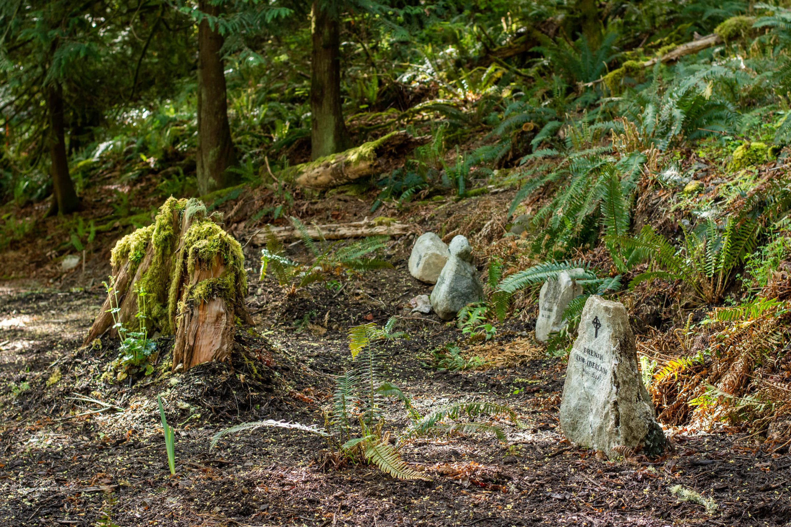
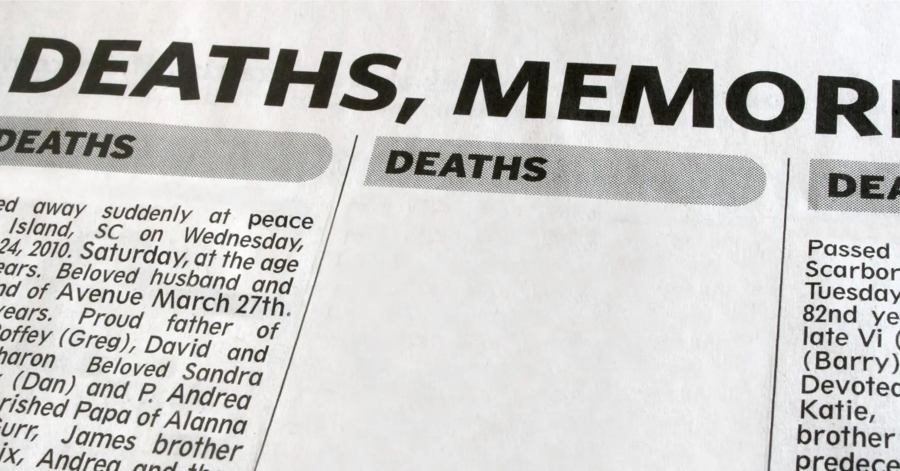
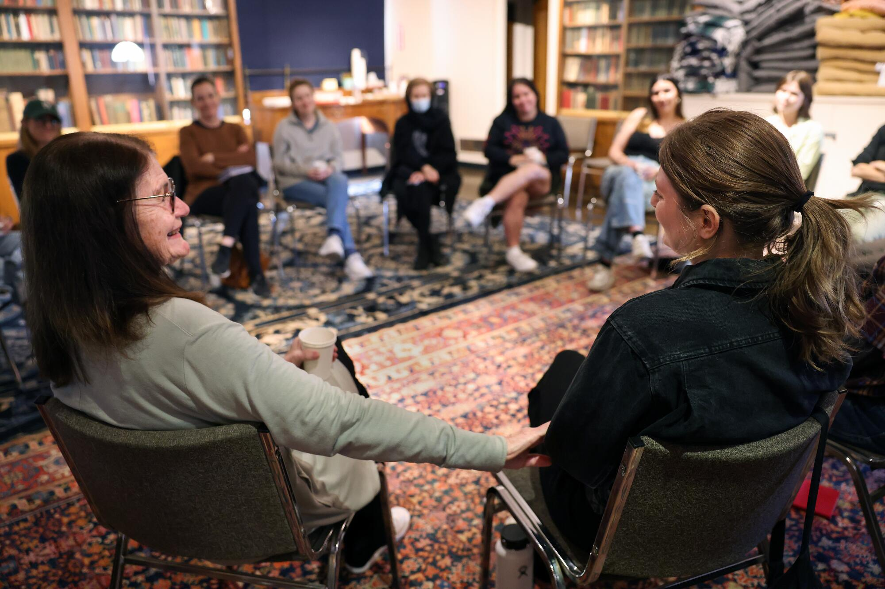
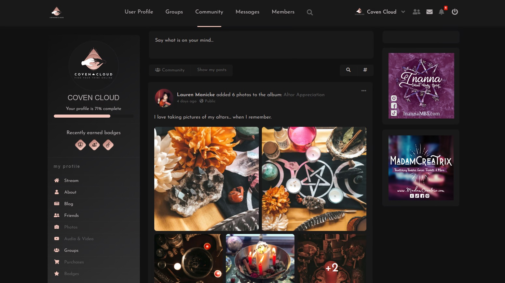
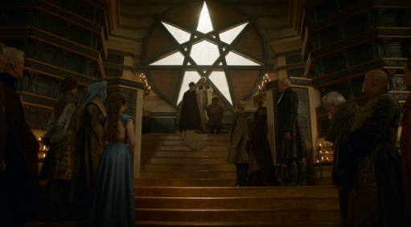

My research seeks to understand how people express and negotiate their identity in new contexts. How do people understand their place in the world? How do they share these ideas with others? And when necessary, how do they try to convince people to believe them?
To answer these questions, I carry out research in a few different contexts. Most broadly, my projects are divided into two different programmes: death in modern society and NRMs in the digital world. Learn more about my research below! My research on death is driven by trying to understand the transforming ways in which people are approaching this major life event. My research on pop culture seeks to understand how marginal and alternative religions carve out community space online.
Green Burial

Green or natural burial describes an alternative to traditional cemetery burial or cremation. These practices involve no embalming or grave liners, and seek to only use biodegradable materials and disturb the surrounding landscape as little as possible.
People choose green burial for many different reasons; whether they want to reduce their carbon footprint or re-join the circle of life when they die.
To study this growing phenomenon, I am currently carrying out a multi-site ethnography across Canada. Through site visits at natural cemeteries, conversations with business owners and advocates, and interviews with people who want green burial, I am trying to paint a picture of the options currently available in Canada and the roadblocks to further development.
Through this research, I also aim to explore how rituals like burial both reflect and shape people’s outlooks on death, nature, and the universe.
Obituaries

Beyond just announcing that someone has died, obituaries convey important details about the deceased. Who did they leave behind? What did they enjoy? What is their legacy? While on the surface, they are about the deceased, they also shed a light on the people who write them. What sort of details do they think are important? What sort of events are they holding to commemorate the dead?
My research on obituaries is carried out in collaboration with the Nonreligion in a Complex Future Project. Our team has collected and coded a sample of 3,300 obituaries, published in 6 Canadian newspapers between 1900-2021. We approach these texts with an eye specifically trained on how a changing religious landscape impact the way that people memorialize the dead. Transformations in outlook are revealed through language that people use, relationships or affiliations they highlight, to even the locations of funerals.
Relevant Publications
Learn more about the “NCF Obituaries Project”
Death Cafés

Rather than a dedicated, physical location, Death Cafés are pop-up events where strangers gather to discuss death, dying, and related issues. Since they began in England in 2011, these events have spread around the world, held in many countries and languages. In collaboration with the Nonreligion in a Complex Future project, we approach Death Cafés as sites where people navigate death amidst a changing social landscape. Where religion once informed both beliefs and practices around death, religious decline creates a situation in which many feel adrift in how to make sense of this major life event.
To study this growing movement, I conducted focus groups and follow-up one-to-one interviews with over 100 participants who had attended Death Cafés in the past. These conversations covered a range of topics, including why people attend these events and their past experiences, as well as broader issues such as how people imagine the afterlife and what they want done with their body after death. Our team is currently analyzing this data with attention to several issues, including people’s preferences on end of life rituals and outlooks on ethical issues such as assisted dying.
Relevant Publications
Learn more about the “NCF Death Cafés Project”
Digital Paganism

Social media is ever-present in our lives, and I approach these platforms as digital field sites to understand beliefs, practices, and community interactions. My work in this area focuses specifically on Witchcraft and contemporary Paganism, since social media offers a rare opportunity for these groups to connect with others and voice their perspectives in mainstream discourse. Especially since many practitioners are ‘solitary,’ social media offers a valuable opportunity for one to express, claim, and legitimize their religious identity.
Whether through topics that suddenly go viral or long-term digital ethnography, I explore interactions on platforms including Twitter, TikTok, Reddit, Facebook, and the blogosphere. I pay particular attention to the ways that communities express and police group norms of what is both possible and acceptable in modern Paganism.
Relevant Publications
Religion and Popular Culture

What do you know about Mormonism? The average person knows very little about religious groups other than their own. What they do know often comes from what they have seen in movies or on television. My research on religion and popular culture focuses specifically on the ways in which new and alternative religions are depicted because – accurate or otherwise – this is where people get most of their knowledge about these groups. I focus specifically on the way in which beliefs and behaviours are presented. How these are presented – and what happens to the characters from various backgrounds – reveal what is considered acceptable or appropriate religious behaviours.
Relevant Publications
Academia and Legitimacy
In addition to the above projects, I am also interested in the mechanisms of the academy itself. Interest in this area began during my Master’s degree, as I explored how Pagan Studies developed as an academic field, and how research is used to benefit the mainstream perceptions of religious communities. I built on this research during my PhD, using the emergent field of Pagan Studies as a case study to further analyze how ideas and identities are legitimized through research. As fields develop over time, they produce what passes for knowledge about the topics that they study. Recognizing this role in knowledge production is crucial as a check and balance on conducting responsible scholarship.
Relevant Publications